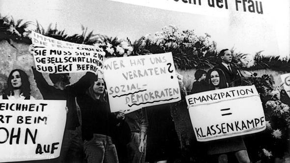

پذيرش > سایت نوشته ها > لذت در مبارزه است/ مصاحبه با آلیس شوارتسر


 لذت در مبارزه است/ مصاحبه با آلیس شوارتسر لذت در مبارزه است/ مصاحبه با آلیس شوارتسر
5 آبان 1390 - - نسخه قابل چاپ
"جنبش نوین زنان آلمان"، بخشی از پیشرفتها و دستاوردهای خود را مدیون تلاشهای برابرخواهانهی آلیس شوارتسر است. او در این راه پر فراز و نشیب، بیش از هر مدافع حقوق زن در آلمان، از همه سو مورد انتقاد قرار گرفته و ناسزا شنیده است؛ نه تنها از سوی مردان جناحهای سیاسی و غیرسیاسی مختلف، بلکه از طرف زنان، آنهم زنانی که خود جناحی از جنبش زنان آلمان را تشکیل میدادند. بخش آلمانی دویچهوله به مناسبت انتشار کتاب "زندگی من ـ آلیس شوارتسر" با او به گفتوگو نشسته و نخستین پرسش خود را در رابطه با همین مسئله مطرح کرده است:
دویچه وله: فکر نمیکنم اغراق باشد اگر بگویم که شما به عنوان زنی که در میان زنان از همه بیشتر فحش خورده، مقام اول را دارید. این تنها مردها نبودند که به شما ناسزا گفتند، بلکه زنها هم همینطور؛ آنهم از طرف فعالان زن جنبش زنان. علت این حملات چه بوده؟
آلیس شوارتسر: اگر ما زنان که ۵۲ درصد جمعیت جهان را تشکیل میدهیم، با هم توافق داشتیم که لازم نبود در مورد این چیزها با هم حرف بزنیم. یکی از فمینیسنتهای آمریکایی در آغاز دههی هفتاد گفته، اولین گام جنبش زنان، آشتی کردن با زنان است نه با مردان. زنان، هزاران سال سنت مبارزه و رقابت با یکدیگر را دارند. هر زنی، در جلب نظر مردی که از هر نظر به او وابسته بوده، وجود زن دیگر را تهدیدی برای خود حساب میکرده. از آنجا که زنان، به عنوان "جنس دوم"، قرنها تحت فشار بودند و تا اندازهای هنوز هم هستند، این "خود تحقیری" را به همجنسهای خود هم منتقل میکند.
جنبش زنان، از ابتدا هم از طیفهای گوناگونی تشکیل میشد و مواضع بسیار متفاوتی را نمایندگی میکرد. این تفاوتها در مرحلهی ابتدایی جنبش پنهان ماند. پس از آن فمینیستهای چپ شکل گرفتند که میگفتند، مبارزهی طبقاتی مهمتر است و تفاوتهای جنسی در مرتبهی دوم اهمیت قرار دارد. یا فمینیستهای همجنسگرا تشکیل شدند که میگفتند همجنسخواهی، استراتژی رهایی است و دگرجنسگرایی، خیانت است. مهمتر این که جنبش زنان در آلمان بسیار جزمگرا بود که به تاریخ و گذشتهی این کشور برمیگردد. حتی تمام طیفهای جنبش چپ نیز، جزمگرا بود. این مسئله مرا، وقتی از پاریس برگشتم، بسیار آزار میداد که همیشه در بحثها همه چیز یا سیاه بود یا سفید، درست بود یا غلط، دوست بود یا دشمن. ما در پاریس با این مسائل درگیر نبودیم. جنبش زنان در آنجا رگههای آنارشیستی داشت. ما در برنامهمان، "دستور کار" نداشتیم و داشتن تفاوت نظر و تضاد برایمان جالب بود. به همین خاطر من خیلی زود از این جریانها سر خوردم.»

تظاهرات برابر خواهانهی زنان در سالهای ۶۸تظاهرات برابر خواهانهی زنان در سالهای ۶۸
این بحثها، در گذشته، آرام و منطقی هم صورت نمیگرفت و اغلب با بروز احساساسات شدید همراه بود. شما این فشارهای عصبی را چگونه تحمل میکردید؟
پرسش بجایی است. این حملهها که اغلب خارج از جنبش زنان بود، برایم خیلی خوشآیند نبود. البته معلوم بود که دچار دردسر میشدم؛ تازه از راه رسیده بودم و پایههای تئوریهای آنها را زیر سئوال میبردم. چیزی که ناراحتکننده بود، حملههایی بود که از داخل جنبش به من میشد. پس از انتشار کتاب "تفاوت کوچک با پیامدهای بزرگش" که در آن به کارکرد سکس و عشق در رابطه با اعمال قدرت در روابط بین زن و مرد پرداخته بودم، ـ موضوعی که دوباره حاد شده ـ خودم را از این ماجراها کنار کشیدم و سخت مشغول کار شدم.
به من عنوان "صدای جنبش زنان" لقب دادهاند (میخندد). بیچاره جنبش زنان! این اشتباه است. جنبش زنان از صداهای زیادی تشکیل شده. عدهای هم به درستی، به این "لقب" اعتراض کردهاند. در واقع، من همیشه تنها و فردی عمل کردهام و برای انجام این و آن هدف و فعالیت مشخص، در مراحلی خاص دنبال "همراه" گشتهام...
تأثیر شما ولی اندک نبوده. نه به این خاطر که بسیاری از نوزادان دختر این نسل، آلیس نامیده شدند یا "اما"؛ نام مجلهی شما. میتوان گفت که شما، در صحنهی بینالمللی اندک تغییراتی ایجاد کردهاید. آیا در حال حاضر زمینهی مساعدی برای "استقلال جنسی" وجود دارد، یا احساس میکنید که از این جهت هم عقبگرد شده؟
هر جا پیشرفتهای بزرگ هست، عقبنشینی هم هست. در حال حاضر روابط، پیچیدهتر شده. وقتی ما در سالهای هفتاد شروع کردیم، در آن زمان، زنها حتی اجازهی کار نداشتند. آنها اجازه نداشتند در مجلس (اگر نمایندهی زنی هم وجود داشت) شلوار بهپا کند. امروزه تصور این چیزها، مشکل است. از آن زمان تا اکنون ولی اتفاقهای زیادی رخ داده و ما به موفقیتهای بسیاری دست یافتهایم. معلوم است که جنبش زنان از نظر اجتماعی در قرن ۲۰ و آغاز قرن ۲۱، پیشرفتهای چشمگیری داشته. ولی درست همین پیشرفتها، روی خطرات موجود را میپوشاند.
من با نگرانی شاهد آن هستم که کل فرهنگ ما به سطح پورنوگرافی تنزل میکند. منظورم اروتیک نیست، بلکه پیوند عمیق لذت جنسی با تمایل به تحقیر و اعمال خشونت است. همزمان در روابط جنسی بین زن و مرد، چیزی وجود دارد که پژوهشگران سکس و تمایلات جنسی به آن "گرایش به برقراری رابطهی جنسی متقابل بین زن و مرد" میگویند. یعنی برقراری ارتباط جنسی برابر و بر اساس توافق طرفین. این دو پدیده در کنار هم وجود دارد.
بنیادگرایی مذهبی هم مسئلهی دیگر است که اسلامگرایان در صدر آن قرار دارند. ولی بنیادگرایان مسیحیها هم در راه رسیدن به آنها هستند. تصادفی نیست که در این رابطه، هر دو در وهلهی نخست، حقوق اولیهی زنان را هدف قرار میدهند. به این ترتیت تضمینی برای پیشرفتهایی که ما به آنها دست یافتهایم، وجود ندارد. باید دوباره برای رسیدن به آنها تلاش کرد.
برای زنان جوان چه توصیهای دارید؟
این که به هر قیمتی نخواهند مورد علاقهی مردها قرار بگیرند و دوست داشته شوند و به چالش تن در دهند. این خیلی مهم است. و بر حق برابری با مردان پافشاری کنند و وقتی رعایت نمیشود، دست به اعتراض بزنند. پیشرفت در کار و شغل و مقام، سهمیهبندی در زمینههای مختلف؛ اینها همه مسائلی هستند که نباید به سادگی از آنها گذشت و ما در مجلهی "اما" هم شدیداً از آنها پشتیبانی میکنیم. ولی به هماناندازه هم اهمیت دارد که زنان فرای منافع شخصی خود، مسائل جهانی را در نظر بگیرند و برای احقاق حقوق در این سطح هم مبارزه کنند. یعنی به زندگی خود معنا بدهند. این زندگی، آنوقت لذت دارد.
دویچه وله
ارسال به
بالاترین
،
توییتر
،
فریندفید
،
فیسبوک
در همين بخش :
 یک خبر تلخ؟ یک قانونشکنی؟ یک تصمیم بخشنامهای جدید؟ یک خبر تلخ؟ یک قانونشکنی؟ یک تصمیم بخشنامهای جدید؟
چرا بایست به سکسوالیته پرداخت؟ / نفیسه آزاد
آزارجنسی خانگی؛ «قربانی» نه، «نجات یافته»
زنان، بزرگترین بازندگان بهار عرب
سانسور از دیدگاه جنسیتی/الهه امانی
ديگر بخش ها :
طرح یک میلیون امضا
|
مقالات
|
سایت نوشته ها
|
اخبار
|
گزارش كمپين
|
گفت و گو
|
علیه سکوت
|
كوچه به كوچه
|
نامه های شما
|
گزارش ویژه
|
گفتگو با اعضا
|
ویژه سالگرد کمپین
|
تصویر برابری
|
دل آرام علی
|
تریبون
|
مقالات
|
تاریخ شفاهی
|
خارج از چارچوب
|
کتابخانه
|
درباره کمپین
|
کمپین در شهرها
|
کمپین در بند
|
صدای تغییر
|
ویژه 22 خرداد
|
لایحه حمایت از خانواده
|
گالری
|
عشا مومنی
|
امیر یعقوبعلی
|
خدیجه مقدم
|
راحله عسگری زاده و نسیم خسروی
|
پروین اردلان،جلوه جواهری، مریم حسین خواه، ناهید کشاورز
|
زینب پیغمبرزاده
|
سعیده امین، سارا ایمانیان، محبوبه حسین زاده، ناهید کشاورز و همایون نامی
|
احترام شادفر
|
نسیم سرابندی زاده،فاطمه دهدشتی
|
وبلاگ مهمان
|
پرونده خرم آباد
|
دستگیری ها
|
مریم مالک
|
پرستو اللهیاری
|
مهرنوش اعتمادی
|
سمیه رشیدی
|
Other Languages
|
همراهان
|
«فراخوان کمپین ده روز با بهاره هدایت»
| English
|